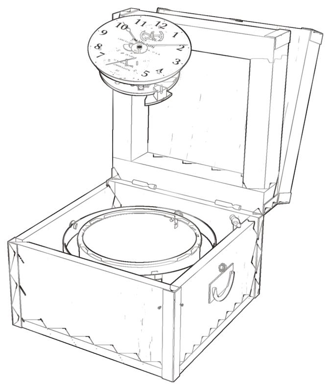
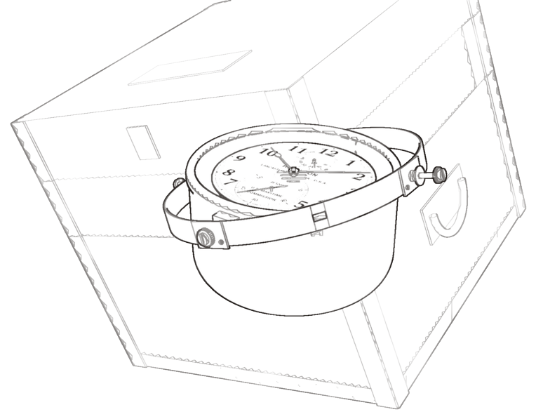
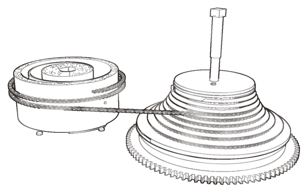
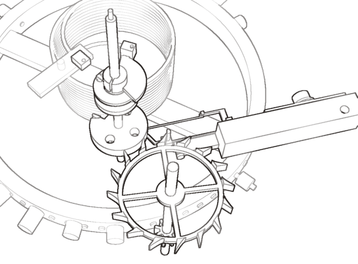
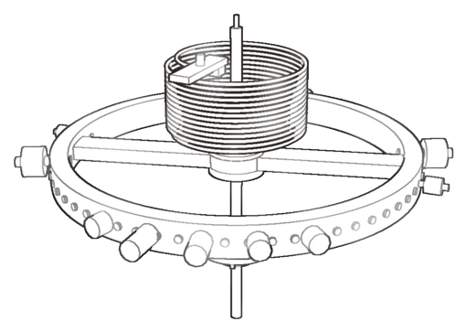

The box moves with the ship. The ring pivots in the box, and the case in the ring at right angles, so the case hangs level and the balance swings in the plane it was adjusted in.
A mainspring pulls harder wound than run down. The chain comes off the fusee’s narrow end while the spring is strong and its wide end as it weakens, so the train is driven with about the same force for two days.
Once per oscillation the balance trips the detent; the released escape wheel pushes the impulse roller once, and the detent locks the next tooth. On the return swing it only bends a light trip spring aside.
A solid steel rim on an Invar arm, with a cylindrical Elinvar hairspring. The rim’s screws correct for temperature; balance screws and timing weights set the rate. There is no regulator.